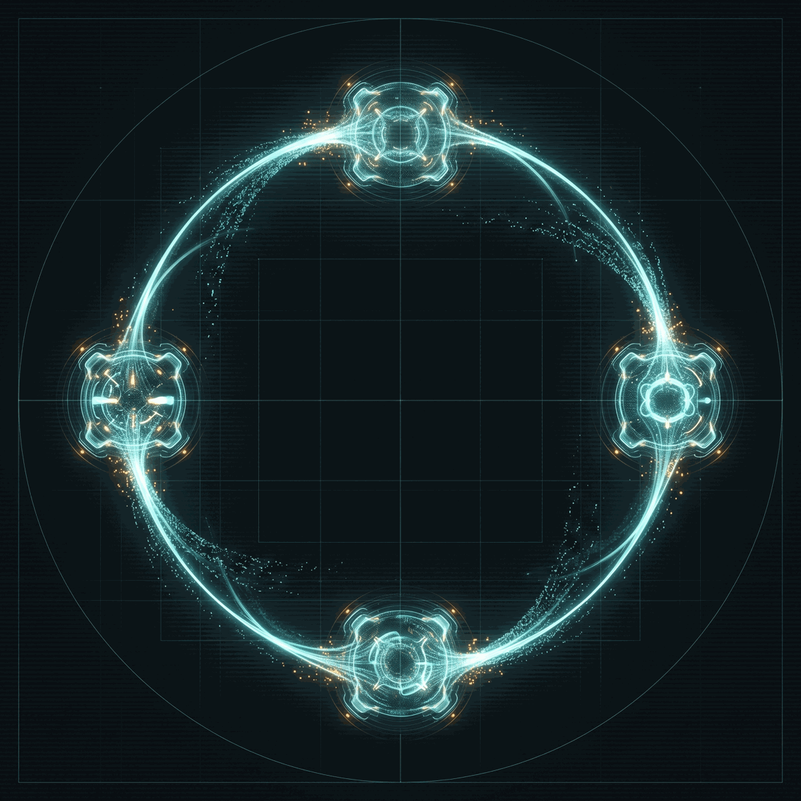

P1
Agent architectures & orchestration
Driving the full research loop, not the individual steps.
long-horizon planningmemorytool usemulti-agent
Toward end-to-end automation of machine-learning research.
The first venue for end-to-end AI agents that do ML research — ideation, experiments, manuscripts, evaluation — capped by a live on-stage agent demonstration.
The past two years produced the first autonomous agents that read literature, form hypotheses, write and run code, analyze results, and draft papers with limited human guidance — and the first benchmarks pitting them against expert humans.
Yet today's systems still fail more often than they succeed, and the topic is scattered across “AI4Science” venues (natural sciences) and “Agentic AI” venues (agents broadly) — leaving ML research itself without a dedicated home, no shared benchmarks or evaluation norms, even as agent-authored manuscripts begin to outpace human review capacity.
AutoResearch is the first venue to fill that gap — bringing together LLM-agent, AutoML, RL, and evaluation researchers to define what automating ML research means, share what works, and confront what does not.

We solicit submissions and invited talks spanning the major stages of automating ML research — the loop, and the cognitive steps inside it.
Driving the full research loop, not the individual steps.
Agents that write, run, and refine experiments — and surface new findings.
The cognitive steps inside the loop — beyond A+B→C.
Measuring research agents on more than a single accuracy score.
Submitted agents attempt a previously unseen ML research task, live, on stage — present capability in real time, not slides about what agents could do.
A first: submissions split by who did the research — conventional human-authored work, and manuscripts substantially produced by autonomous agents.
All paper deadlines are Anywhere on Earth (AoE). Dates marked tentative are finalized once the workshop is accepted.
| Call for papers released | Jul 2026 |
| Paper submission deadline (both tracks) | Aug 29, 2026 (AoE) |
| Author notifications | Sep 26, 2026 |
| Camera-ready / poster files due | Nov 15, 2026 |
| Workshop day | Dec 2026 |
// tentative pending acceptance · all paper deadlines are AoE
One day, ≈ 8 hours, with ≥ 30% unstructured for posters, panel, and demo. The anchor moments:
// provisional — times finalized closer to the event
The lineup is being assembled — one invited speaker for each of the four pillars, all attending in person. Names are announced once the workshop is accepted and invitations are confirmed.
// to be confirmed. Speakers are invited on acceptance; the final roster and a panel of additional voices are announced closer to the day.